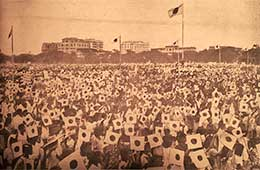

|
j
a v a s c r i p t |
April 29, 1943

Tencho-Setsu Paraders
Tribune: "18 million Filipinos pay tribute to Emperor." La Vanguardia: "Manila Celebrates ... 150,000 participated." Tomorrow they'll say it was 200,000. About 35,000 actually attended, at least momentarily. Most had to walk to the parade and back as transportation was lacking, so the program was cut short. Today's was a skeleton affair; and lest it be said that the Filipinos joyously celebrated Tencho-Setsu, I looked closely at a thousand and one faces and saw no joy — just poker faces perspiring heavily in the sun. "New brand will replace Victory." Every change of cigarette brand is an opportunity to raise prices. 'Victory' replaced 'Pirates' recently, and people said the "Pirates are going and Victory is coming." This reminds me of the Japanese adage much published in the papers: "Sampaguita's the flower, Nippon the friend." The people came back with, "Manga es la fruta, Nippon el hijo de puta" [Mango's the fruit, Nippon the son of a whore] — there, I've said it. What's news? Nothing, a complete blank. Manila is still waiting for Tunis to fall. |
|
|
|
|